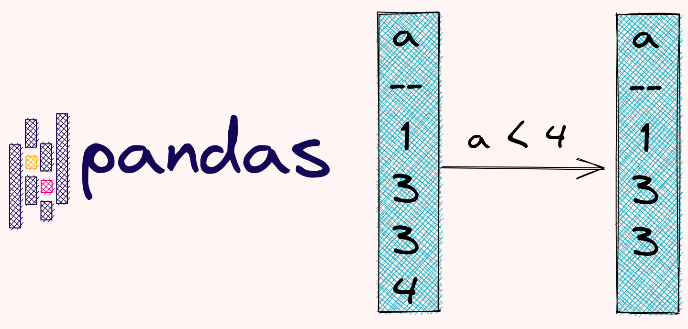

4.13. Filter Rows or Columns#

4.14. Pandas.Series.isin: Filter Rows Only If Column Contains Values From Another List#
When working with a pandas Dataframe, if you want to select the values that are in another list, the fastest way is to use isin.
In the example below, 2 is filtered out because 3 is not in the list.
import pandas as pd
df = pd.DataFrame({'a': [1, 2, 3], 'b': [4, 5, 6]})
df
| a | b | |
|---|---|---|
| 0 | 1 | 4 |
| 1 | 2 | 5 |
| 2 | 3 | 6 |
l = [1, 2, 6, 7]
df.a.isin(l)
0 True
1 True
2 False
Name: a, dtype: bool
df = df[df.a.isin(l)]
df
| a | b | |
|---|---|---|
| 0 | 1 | 4 |
| 1 | 2 | 5 |
4.14.1. df.query: Query Columns Using Boolean Expression#
It can be lengthy to filter columns of a pandas DataFrame using brackets.
import pandas as pd
df = pd.DataFrame(
{"fruit": ["apple", "orange", "grape", "grape"], "price": [4, 5, 6, 7]}
)
print(df[(df.price > 4) & (df.fruit == "grape")])
fruit price
2 grape 6
3 grape 7
To shorten the filtering statements, use df.query instead.
df.query("price > 4 & fruit == 'grape'")
| fruit | price | |
|---|---|---|
| 2 | grape | 6 |
| 3 | grape | 7 |
4.14.2. transform: Filter a pandas DataFrame by Value Counts#
To filter a pandas DataFrame based on the occurrences of categories, you might attempt to use df.groupby and df.count.
import pandas as pd
df = pd.DataFrame({"type": ["A", "A", "O", "B", "O", "A"], "value": [5, 3, 2, 1, 4, 2]})
df
| type | value | |
|---|---|---|
| 0 | A | 5 |
| 1 | A | 3 |
| 2 | O | 2 |
| 3 | B | 1 |
| 4 | O | 4 |
| 5 | A | 2 |
df.groupby("type")["type"].count()
type
A 3
B 1
O 2
Name: type, dtype: int64
However, since the Series returned by the count method is shorter than the original DataFrame, you will get an error when filtering.
df.loc[df.groupby("type")["type"].count() > 1]
---------------------------------------------------------------------------
IndexingError Traceback (most recent call last)
/tmp/ipykernel_791962/4076731999.py in <module>
----> 1 df.loc[df.groupby("type")["type"].count() > 1]
~/book/venv/lib/python3.8/site-packages/pandas/core/indexing.py in __getitem__(self, key)
929
930 maybe_callable = com.apply_if_callable(key, self.obj)
--> 931 return self._getitem_axis(maybe_callable, axis=axis)
932
933 def _is_scalar_access(self, key: tuple):
~/book/venv/lib/python3.8/site-packages/pandas/core/indexing.py in _getitem_axis(self, key, axis)
1142 return self._get_slice_axis(key, axis=axis)
1143 elif com.is_bool_indexer(key):
-> 1144 return self._getbool_axis(key, axis=axis)
1145 elif is_list_like_indexer(key):
1146
~/book/venv/lib/python3.8/site-packages/pandas/core/indexing.py in _getbool_axis(self, key, axis)
946 # caller is responsible for ensuring non-None axis
947 labels = self.obj._get_axis(axis)
--> 948 key = check_bool_indexer(labels, key)
949 inds = key.nonzero()[0]
950 return self.obj._take_with_is_copy(inds, axis=axis)
~/book/venv/lib/python3.8/site-packages/pandas/core/indexing.py in check_bool_indexer(index, key)
2386 mask = isna(result._values)
2387 if mask.any():
-> 2388 raise IndexingError(
2389 "Unalignable boolean Series provided as "
2390 "indexer (index of the boolean Series and of "
IndexingError: Unalignable boolean Series provided as indexer (index of the boolean Series and of the indexed object do not match).
Instead of using count, use transform. This method will return the Series of value counts with the same length as the original DataFrame.
df.groupby("type")["type"].transform("size")
0 3
1 3
2 2
3 1
4 2
5 3
Name: type, dtype: int64
Now you can filter without encountering any error.
df.loc[df.groupby("type")["type"].transform("size") > 1]
| type | value | |
|---|---|---|
| 0 | A | 5 |
| 1 | A | 3 |
| 2 | O | 2 |
| 4 | O | 4 |
| 5 | A | 2 |
4.14.3. df.filter: Filter Columns Based on a Subset of Their Names#
If you want to filter columns of a pandas DataFrame based on characters in their names, use DataFrame.filter. In the example below, we only choose the columns that contain the word “cat”.
import pandas as pd
df = pd.DataFrame({"cat1": ["a", "b"], "cat2": ["b", "c"], "num1": [1, 2]})
df
| cat1 | cat2 | num1 | |
|---|---|---|---|
| 0 | a | b | 1 |
| 1 | b | c | 2 |
df.filter(like='cat', axis=1)
| cat1 | cat2 | |
|---|---|---|
| 0 | a | b |
| 1 | b | c |
4.14.4. Filter a pandas DataFrame Based on Index’s Name#
If you want to filter a pandas DataFrame based on the index’s name, you can use either filter or loc.
import pandas as pd
import numpy as np
values = np.array([[1, 2], [3, 4], [5, 6]])
df = pd.DataFrame(
values,
index=["user1", "user2", "user3"],
columns=["col1", "col2"]
)
df
| col1 | col2 | |
|---|---|---|
| user1 | 1 | 2 |
| user2 | 3 | 4 |
| user3 | 5 | 6 |
df.filter(items=['user1', 'user3'], axis=0)
| col1 | col2 | |
|---|---|---|
| user1 | 1 | 2 |
| user3 | 5 | 6 |
df.loc[['user1', 'user3'], :]
| col1 | col2 | |
|---|---|---|
| user1 | 1 | 2 |
| user3 | 5 | 6 |
4.14.5. all: Select Rows with All NaN Values#
DataFrame.all is useful when you want to evaluate whether all values of a row or a column are True. If you want to get the rows whose all values are NaN, use both isna and all(axis=1).
import pandas as pd
df = pd.DataFrame({'a': [1, 2, float('nan')], 'b': [1, float('nan'), float('nan')]})
is_all_nan = df.isna().all(axis=1)
is_all_nan
0 False
1 False
2 True
dtype: bool
df.loc[is_all_nan, :]
a b
2 NaN NaN
4.14.6. pandas.clip: Exclude Outliers#
Outliers are unusual values in your dataset, and they can distort statistical analyses.
import pandas as pd
data = {"col0": [9, -3, 0, -1, 5]}
df = pd.DataFrame(data)
df
| col0 | |
|---|---|
| 0 | 9 |
| 1 | -3 |
| 2 | 0 |
| 3 | -1 |
| 4 | 5 |
If you want to trim values that the outliers, one of the methods is to use df.clip.
Below is how to use the 0.5-quantile as the lower threshold and .95-quantile as the upper threshold
lower = df.col0.quantile(0.05)
upper = df.col0.quantile(0.95)
df.clip(lower=lower, upper=upper)
| col0 | |
|---|---|
| 0 | 8.2 |
| 1 | -2.6 |
| 2 | 0.0 |
| 3 | -1.0 |
| 4 | 5.0 |